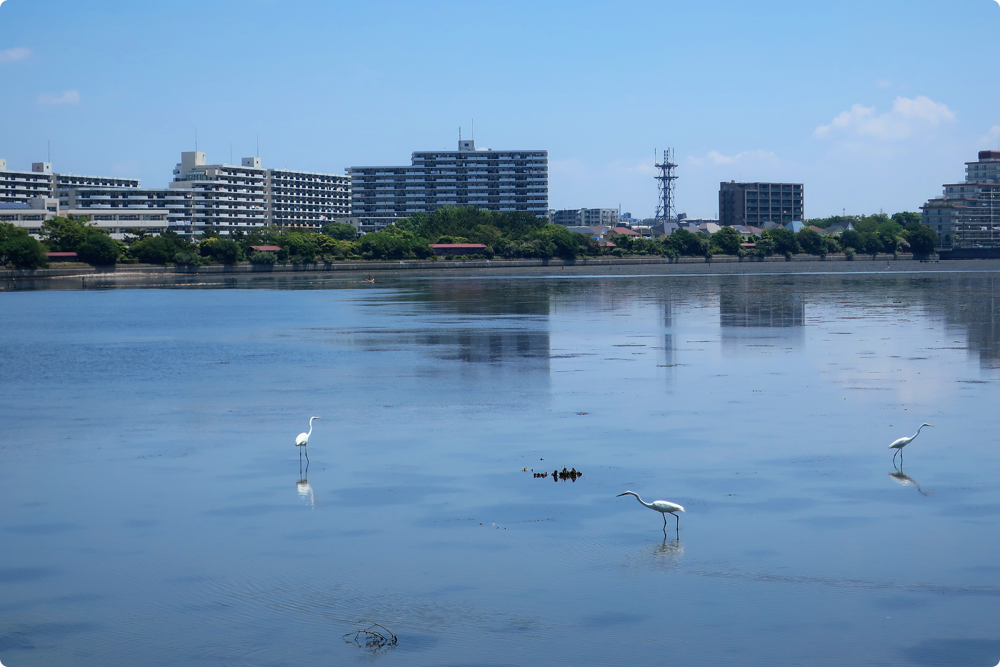

「谷津干潟を知ろう」第35期ボランティア入門講座「谷津干潟を知ろう」第35期ボランティア入門講座
谷津干潟は、千葉県習志野市にある、東京湾の奥に残された干潟です。周囲を住宅地や道路に囲まれながらも、潮の満ち引きによって豊かな自然の営みが育まれています。
干潟は、満潮時には水面が広がり、干潮時には泥の干潟が現れます。そこにはカニやゴカイ、貝類などの小さな生き物がすみ、それらを求めて多くの野鳥が訪れます。都市の中にありながら、生き物同士のつながりを間近に感じられることが、谷津干潟の大きな魅力です。

谷津干潟は、国際的にも重要な湿地として、1993年にラムサール条約に登録されました。身近な散策地でありながら、世界につながる自然環境でもあります。
 店舗名店舗名
店舗名店舗名